Fig 2.1
In the Expansive Plain
2
Various types of landforms, such as lofty mountains, expansive plains,
plateaus, scorching deserts and valleys are found on the surface of the Earth.
They were formed over millions of years. In the previous chapter, you learned
in detail about the Northern Mountains, one of the physiographical divisions
of our country. Observe the map (Fig 2.1) given below. Don’t you find a vast
physical division that lies to the south of the Northern Mountains and to the
north of the Peninsular Plateau? It is an extensive alluvial plain known by the
name Indo-Gangetic- Brahmaputra Plain.
Page 28
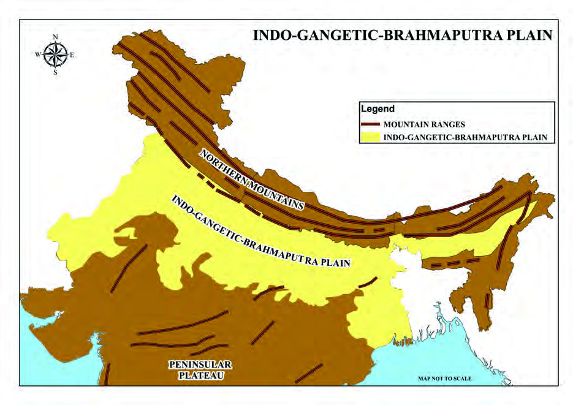
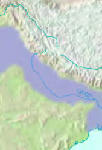
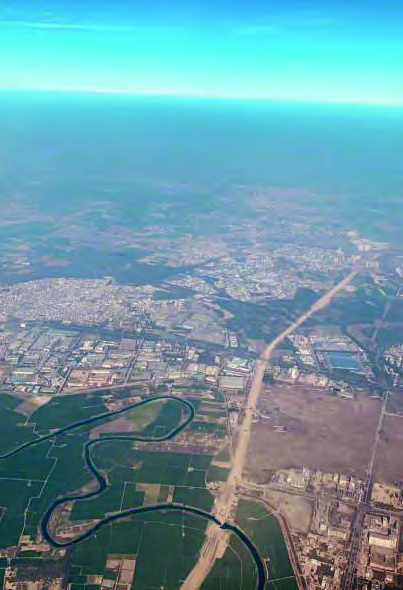
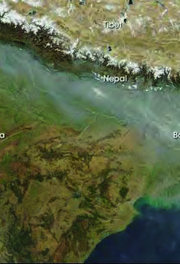
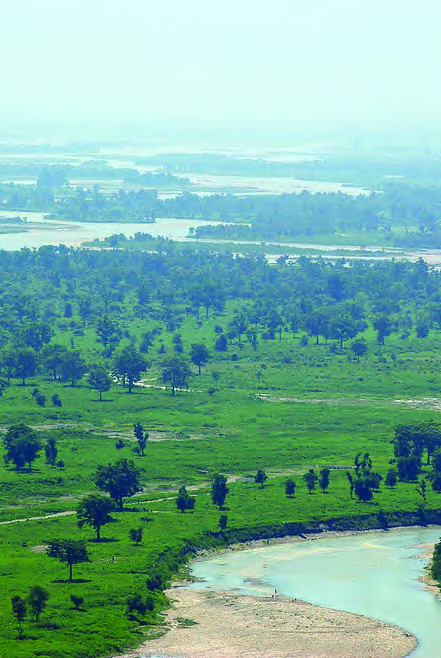
Page 29
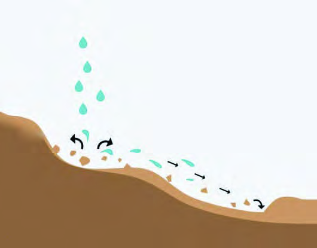


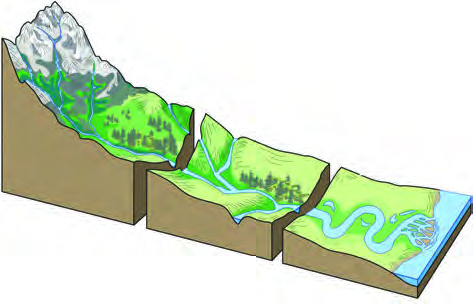

29
In the Expansive Plain
Standard IX
Let's have a glance at the formation of
this physiographical division, which is
also called the North Indian Plain.
Diverse
landforms
are
formed
on
the surface of the Earth through the
continuous processes driven by external
forces, such as running water, wind,
glaciers, and waves that operate on the Earth's surface. Therefore,
these external forces are called geomorphic agents, and the processes
that lead in the formation of
landforms are called geomorphic
processes. The sediments or rock
materials formed through the
disintegration of rocks by various
physical, chemical, and biological
processes are transported by these
external forces or geomorphic
agents from one place to another.
These materials are then deposited
conveniently in low lying regions.
This process is called deposition.
Now look at Fig 2.2.
Haven’t you seen how
the
rainwater
carries
away loose rock materials
from a higher region and
deposits them in a lower
region?
Rivulets originating from
high altitudes form rills.
Rills join together to form
streams. Rivers develop
through the merging of
numerous such streams.
Rivers originating from
high altitudes transport
sediments
down
the
stream and deposit them
in low-lying areas. Over time, the deposition of sediments by rivers
creates numerous depositional landforms, including expansive alluvial
plains.
Fig 2.2
Deposition of
the detached
particles in
low-lying
regions
Transportation of the
detached particles
(Loose rock materials)
raindrops
Alluvium
refers
to
debris,
including silt, sand, gravel, etc.,
brought by rivers.
Alluvium
The place of origin of a river is called its source, and the
place at which it discharges into the sea or another body
of water is referred to as the river mouth.
Upper Course
Place of Origin
River
Mouth
Middle Course
Tributaries
Lower Course
Page 30


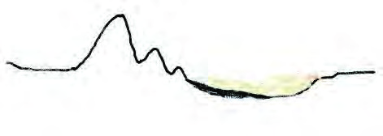
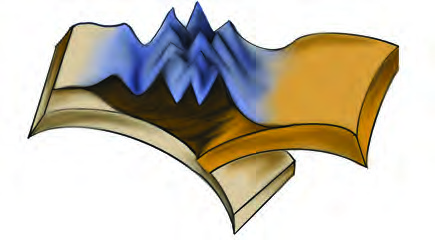
30
Part I
Social Science II
The
fertile
Indo-Gangetic-
Brahmaputra plain was also
formed in the same way by the
deposition of sediments carried
by rivers. The sediments are
deposited in a vast depression
at the south of the Himalayas
which was formed as a result of
the formation of the Himalayas.
The sediments, transported by
rivers originating from both the
Himalayas and Peninsular India, were deposited in this expansive depression,
which led to the formation of the plain. The continuous depositional processes
over millions of years have contributed to the evolution of this fertile plain.
The average depth of alluvial deposits in this plain ranges from 1000 metres to
2000 metres. Observe the graphical representation depicting the formation of
the Indo-Gangetic-Brahmaputra Plain (Fig 2.3).
The vast depression formed
The vast depression formed
to the south of the Himalayas
to the south of the Himalayas
as a result of the formation
as a result of the formation
of the Himalayas.
of the Himalayas.
Formation of the Himalayas
Formation of the Himalayas
Observe the map (Fig 2.4) and list out the rivers that flow
through the Indo-Gangetic-Brahmaputra Plain.
Ganga
Yamuna
Betwa
Rivers originating from the Himalayas are known as Himalayan rivers,
while those originating from the peninsular plateaus are referred to
as peninsular rivers. Categorize the rivers flowing through the Indo-
Gangetic-Brahmaputra plain based on their place of origin as Himalayan
rivers or Peninsular rivers, and list them accordingly. Use Fig. 2.1 and
2.4 for this purpose.
Himalayan Rivers
Peninsular Rivers
Fig 2.3
Tibetan Plateau
Himadri
Himachal
Shiwalik
Indo-Gangetic-
Brahmaputra Plain
Peninsular
Plateau
Alluvial deposits
Graphical representation only for the purpose
of conceptual clarity. Not according
to the scale
I
n
di
a
n
P
la
t
e
I
n
di
a
n
P
la
t
e
E
ur
as
ia
n
P
la
t
e
E
ur
as
ia
n
P
la
t
e
Page 31


31
In the Expansive Plain
Standard IX
The Indo-Gangetic-Brahmaputra Plain, extending approximately
over 3200 km from the mouth of River Indus to the mouth of
River Ganga, is one of the largest alluvial plain in the world. It
spreads over around 2400 km in India. The plain widens from
east to west, with the width varying between 150 km and 300
km. This plain is bordered by the Shiwalik ranges in the north
and the irregular edges of the Peninsular Plateau in the south.
The plain covers an area of approximately 7 lakh sq.km.
Features such as fertile soil, adequate water supply, favourable
climate and flat topography make this region suitable for
agriculture.
Geographically, this plain can be considered as a single
physiographic unit. However, based on the river system,
direction of flow of rivers and topographical features, the
plain can be divided into four regional divisions.
Now, let's examine the characteristic features of each division.
List the eastern and western boundaries of the North Indian
Plains with the help of a physiographic map of India.
Observe the map provided (Fig 2.4) and list the four regional
divisions of the North Indian Plain.
1. Rajasthan Plain
2. ............................
3. ............................
4. ............................
Page 32
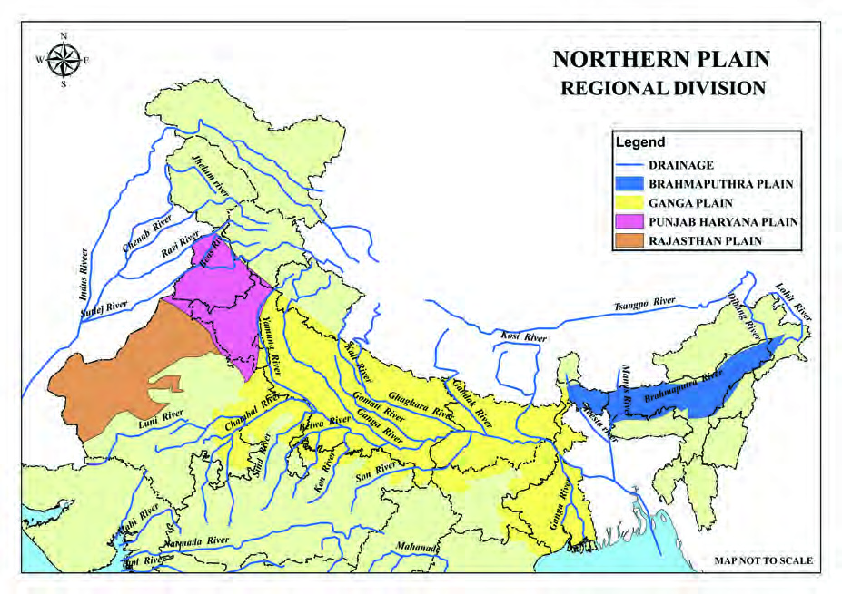


32
Part I
Social Science II
Rajasthan Plain
The Rajasthan Plain, which includes the Thar Desert, marks
the westernmost end of the North Indian Plain. Two-thirds of
the Thar Desert is situated in Rajasthan, while the remaining
portion extends into the neighbouring states of Haryana,
Punjab, and Gujarat. The Thar Desert is further divided into
two significant regions: the actual desert area called Marusthali
(the desert proper) and the semi-arid plain (semi desert region)
known as Rajasthan Bagar.The geographical features of the
Thar Desert are explained in detail in the following chapter.
The Rajasthan Plain is situated to the west of the Aravali
Mountain range.
Fig 2.4
Locate the Aravali Mountain range with the help of a
physiographic map of India.
Find out the influence of the Aravali Mountain range in the
climate of the Rajasthan Plain.
NORTH INDIAN PLAIN
REGIONAL DIVISION
Page 33


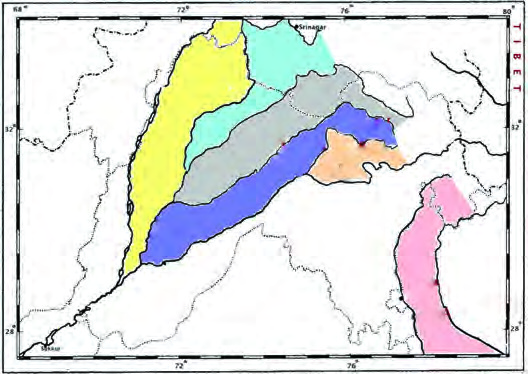
33
In the Expansive Plain
Standard IX
A significant river in this plain is the Luni, which is non-
perennial in nature. There are numerous salt lakes in Rajasthan
Plain, and some of the major salt lakes are Sambhar, Didwana,
and Sargol.
Punjab-Haryana Plain
You might have understood the main features of the Rajasthan
Plain. Now, let's discuss the features of the Punjab-Haryana
Plain. As you move from the Rajasthan Plain towards east
and northeast, you can see the Northern Plains gradually
transforming into a fertile plain. The Punjab-Haryana plain is
situated to the east and northeast of the Rajasthan Plain. This
plain is the western part of the North Indian Plain and extends
upto the Yamuna River.
The eastern border of this plain is defined by River Yamuna.
In India, this plain extends over the states of Punjab,
Haryana,
and
Himachal
Pradesh, covering an area
of approximately 1.75 lakh
sq.km.
It
gently
slopes
towards the west. The Punjab
Plain, a significant part of this
region, is primarily formed by
the deposition of sediments
carried by rivers such as
Satluj, Jhelum, Chenab, Ravi
and
Beas.
Punjab
is
etymologically
known
as
the Land of Five Rivers. The
Punjab-Haryana
Plain
is
divided into five major doabs.
Do you know what a doab is? A doab is a land lying between
two rivers that join together later. Observe Fig. 2.5 for
reference.
Locate the significant landform to the west of the Punjab-
Haryana Plain by referring to an atlas.
Indus
Indus
Jhelum
Jhelum
Chenab
Chenab
Ravi
Ravi
Beas
Beas
Satluj
Satluj
Sindh-Sagar
Sindh-Sagar
Doab
Doab
Rachna
Rachna
Doab
Doab
Bari
Bari
Doab
Doab
Chaj
Chaj
Doab
Doab
Bist
Bist
Doab
Doab
Fig 2.5
MAP NOT TO SCALE
ST-287-3-SOC. SCI-II (E)-9-VOL-1
Page 34


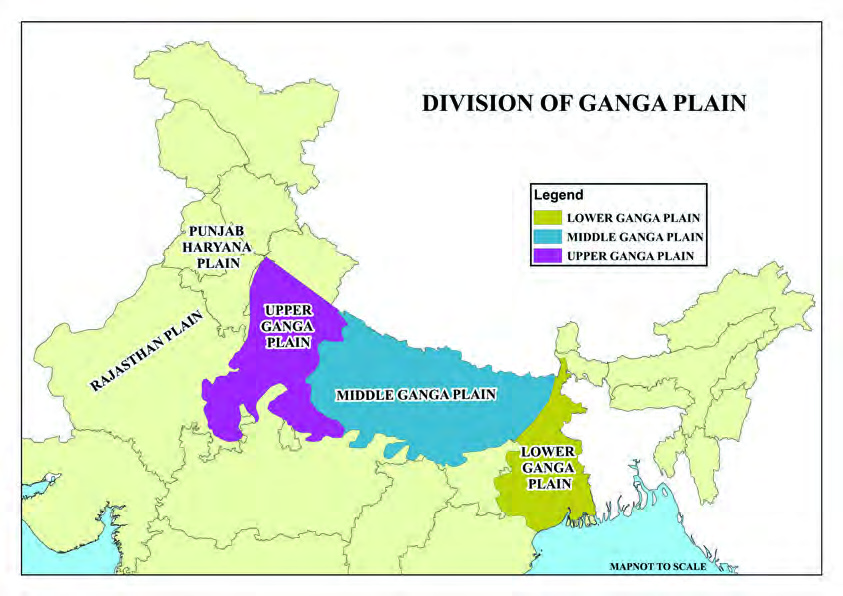

34
Part I
Social Science II
The Ganga Plain
The division of the plain situated to the
east of the Punjab - Haryana Plain is
known as the Ganga plain. Observe the
map (Fig 2.4). The Ganga Plain stretches
from Bangladesh in the east to the Yamuna
River in the west. This expansive plain
covers the states of Uttarakhand, Uttar
Pradesh, Haryana, Delhi, and parts of
Jharkhand and West Bengal, spanning
an area of approximately 3.75 lakh
sq.km. This expansive plain was formed
through the depositional processes by
River Ganga and its tributaries. The
average elevation of the Ganga Plain is
around 200 metres above mean sea level, and it exhibits a general
slope towards the east and the southeast.
Major Doabs
Bist-Jalandhar Doab - between the
rivers Beas and Satluj.
Bari Doab - between the rivers Beas
and Ravi.
Rachna Doab - between the rivers
Ravi and Chenab.
Chaj Doab - between the rivers
Chenab and Jhelum.
Sindh-Sagar Doab - between the
rivers Indus and Jhelum-Chenab.
Based on geographical features, the Ganga Plain has been further
divided into three regions. Observe the given map (Fig 2.6) and
identify them.
Upper Ganga Plain Middle Ganga Plain
Lower Ganga Plain
Fig 2.6
BRAHMAPUTRA PLAIN
BRAHMAPUTRA PLAIN
Page 35


35
In the Expansive Plain
Standard IX
Brahmaputra Plain
The Brahmaputra Plain, known by various names such
as Brahmaputra Valley, Assam Valley, and Assam Plain,
constitutes the easternmost part of the North Indian Plain.
Stretching from the easternmost edge of Assam to the west of
Dubri, near the border of Bangladesh, it spans approximately
720 km in length, with the width ranging from 60 to 70 km.
The major portion of the Brahmaputra Plain is located in the
state of Assam. Though the Brahmaputra Plain is commonly
considered as the eastward extension of the North Indian
Plain, geographically this plain stands distinct and separate
from the rest of the North Indian Plain.
The Eastern Himalaya in the north, the Patkai-Naga Hills in
the east, and the Garo-Khasi-Jaintia Hills and Mikir Hills in
the south serve as its natural boundaries, separating the plain
from the surrounding areas. The Lower Ganga Plain lies to the
west of the Brahmaputra plain.
The Brahmaputra Plain, spanning an area of approximately
56,275
sq.km,
is
formed
through
the
depositional
processes carried out by the Brahmaputra River and
its tributaries. Teesta, Manas, Lohit and Dibang are
some of the major tributaries of the Brahmaputra River.
This plain is rich in alluvial fans. Let's explore what alluvial
fans are. Observe Fig 2.7. When rivers enter a plain from
mountainous regions, their velocity decreases abruptly. The
sediments (alluvium) carried by the rivers get deposited in the
form of fans. Such depositional landform features are referred
to as alluvial fans.
With the help of an atlas, identify and locate the Brahmaputra
Plain in an outline map of India, and include it in My Own Atlas
Observe the map (Fig 2.4) and locate the major tributaries of the
River Brahmaputra in the outline map of India.Include it in ‘My
Own Atlas’.
Page 36
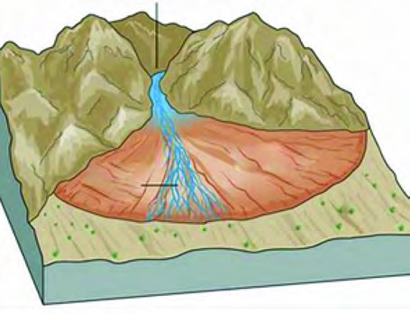
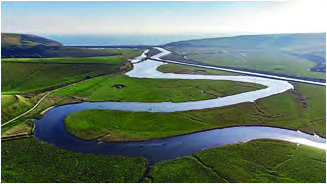
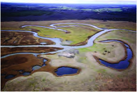


36
Part I
Social Science II
Rivers that continue flowing
through plains split into many
channels. As the river's velocity
decreases, it starts flowing
creating curves in the river
course or in a sinuous manner.
This eventually leads to the
formation of ox-bow lakes.
Observe the given Fig 2.8 to
understand the formation of
ox-bow lakes.
Fig 2.7
Alluvial Fan
Braided
Braided
Rivers
Rivers
Alluvial Fan
Alluvial Fan
Plain
Plain
Fig 2.9
River Meandering
Fig 2.10
Ox-Bow lakes
Meanders and Ox-Bow Lakes
A river, flowing through comparatively gentle
slopes, deviates when alluvial deposits within the
river course create obstructions to the flow. This
deviation leads to the formation of sinuous curves
along the river course, creating meanders. Over a
period of time, continuous erosion and deposition
cause meanders to curve further. Subsequently,
when the river takes a straighter course, such
curved sections get detached from the main river,
forming isolated water bodies. Such isolated
water bodies are called ox-bow lakes.
Erosion
Erosion
Erosion
Deposition
Deposition
Deposition
Fig 2.8
Formation of Ox-Bow Lakes
Page 37
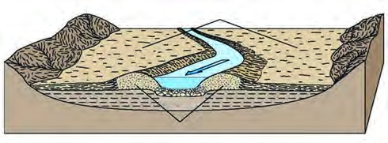

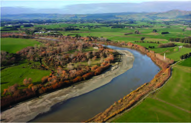


37
In the Expansive Plain
Standard IX
A river thus flowing in a sinuous manner is called river
meandering. Fig 2.9 illustrates a river meandering.
The North Indian Plain can be
divided into three zones from north
to south based on its geomorphic
features.
Bhabar
Tarai
Alluvial plains
Let's explore the characteristic
features of each of these zones.
Bhabar
is
a
narrow
belt,
approximately 8 to 10 km wide,
running parallel to the Shiwalik
mountain range at the break-up of
the slope. It is situated to the south
of the Shiwalik mountain range
along its foothills. This zone of the
plain is formed by the deposition
of rocks and boulders brought by
rivers flowing from the mountains.
The rivers flowing through this
region are not visible as they flow
beneath the rocks and boulders.
Look at Fig. 2.12.
Fig 2.11
Flood Plains
River Channel
River Channel
Levees
Levees
Prepare a digital album containing the pictures of river
meandering and ox-bow lakes in different places of the world.
Flood Plains
During floods, the alluvium brought by
rivers gets deposited along the banks of
a river, and plains are formed. The plains
thus formed are flood plain. These areas are
ideal for agriculture and many well- known
river valley civilizations in the world had
flourished along such flood plains.
Page 38

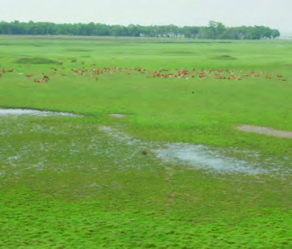
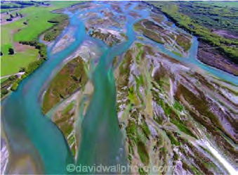


38
Part I
Social Science II
Fig 2.12
Bhabar Region
Fig 2.13
Tarai Region
Riverine Islands, Levees and
Sandbars
When rivers flow through plains,
their
velocity
and
depth
are
comparatively low. Therefore, the
sediments brought by rivers get
deposited, forming islands in the
river channels (Riverine Islands) and
ridges along their sides (Levees).
Linear
landforms
formed
by
sediments including sand, silt and
gravel along river beds are called
sandbars.
The Tarai is a marshy and swampy tract,
approximately 10 to 20 km wide, running
parallel to the Bhabar belt. The rivers
that disappear in the Bhabar region re-
emerge in this area. Observe Fig 2.13. The
Tarai has a luxurious growth of natural
vegetation and serves as a habitat for
varied wildlife.
To the south of the Tarai, the belt consisting
of older and newer alluvial deposits forms
the Alluvial plain. The older alluvium
deposits are called the Bhangar, and the
newer ones are referred to as the Khadar.
The major characteristic features of this
region include depositional landforms
such as riverine islands, sandbars, and
deltas. Braided streams, meanders and
ox-bow lakes are also prominent features
of this area.
Observe the diagram (Fig 2.14) illustrating
the side profile of the North Indian Plain.
Page 39
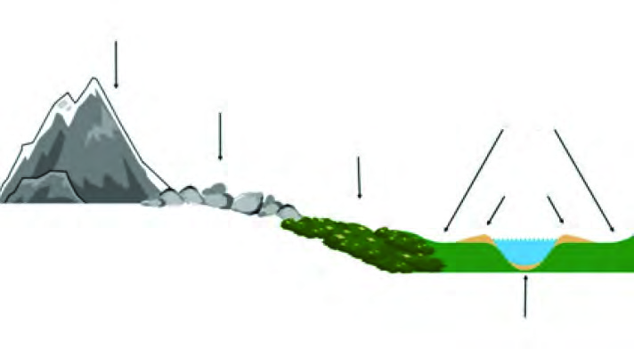
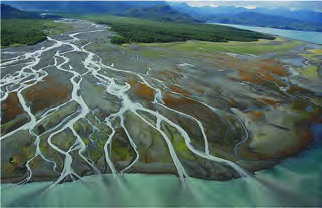
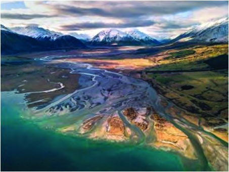


39
In the Expansive Plain
Standard IX
Fig 2.14
The side profile of the North Indian Plain
Himalayas
River Valley
Bhabar
Bhangar
Khadar
Tarai
Deltas
When the river nears
the
river
mouth
through the plains,
the velocity of the
river decreases. Most
rivers
branch
out
into
distributaries
at this stage, where
the volume of both water and sediments is high.
The sediments brought by the river are deposited
between these distributaries, forming almost
triangular-shaped landforms called deltas. These
features are named after the Greek alphabet Δ
(Delta) due to their resemblance in shape.
Fig 2.15
A Deltaic Region
Which one of the geographical divisions of the North Indian
Plain is more suitable for agriculture?
Graphical representation only for the purpose
of conceptual clarity. Not according
to the scale
Page 40

40
Part I
Social Science II
You might have understood the physiographic features of
the North Indian Plain by now. The climate experienced in a
region is as significant as physiographic features in influencing
characteristic features such as natural vegetation, wildlife,
human life, soil and agricultural diversity in that particular
region. Let's explore the main characteristic features of the
climate experienced in the North Indian Plain.
Climate of the North Indian Plain
The Cold Weather Season
Usually, the cold weather season sets in by mid-November in
North India. December and January are the coldest months
in the North Indian Plain and excessive cold is experienced
during this period. Do you know why there is excessive cold
weather in the North Indian Plain?
The major portion of the North Indian Plain is located far
away from the moderating influence of the oceans, result
ing in a continental climate.
Snowfall in the nearby Himalayan ranges contributes to
strong cold waves.
Cold winds from West Asia cause frost, fog and cold waves
in the western part of the North Indian Plain.
The apparent movement of the sun from the northern
hemisphere towards the southern hemisphere adds to the
cold conditions.
During the cold weather season, the North Indian Plain
receives slight rainfall.
Identify and list out the landforms which are formed due to
the depositional process by rivers. Prepare a digital album
containing the pictures of such depositional landform features.
Page 41


41
In the Expansive Plain
Standard IX
The Hot Weather Season
The temperature increases in the North Indian Plain by March.
The summer season in the North Indian Plain is experienced
in the months of April, May, and June. Summer is extremely
severe in North Indian Plain. By the month of May, the
temperature rises up to 48 Degree Celsius in the western part
of the North Indian Plain.
Hot, dry and oppressive wind blows from the desert region of
Rajasthan to the Ganga Plain in the months of May and June.
This wind, called ‛Loo’, increases the temperature considerably
in the North Indian Plain.
Dust storms are very common in the evenings in Punjab,
Haryana, Eastern Rajasthan, and Uttar Pradesh. As these
storms bring light rain during summer, it provides some relief
from the oppressive heat.
The Southwest Monsoon Season
As a result of the rapid increase in temperature over the North
Indian Plain by the month of March, a low-pressure area is
developed over this region. This low-pressure area attracts
the southwest monsoon winds to the Indian subcontinent. The
southwest monsoon winds enter the Indian subcontinent as
two branches.
By observing the given map (Fig 2.17), identify and list the two
branches of the southwest monsoon winds. Try to understand
their paths over the subcontinent.
The Arabian branch of the southwest monsoon winds
The North Indian Plain's distance from the ocean contributes
to the excessive heat experienced during the summer in these
regions. Why is it so?
Page 42
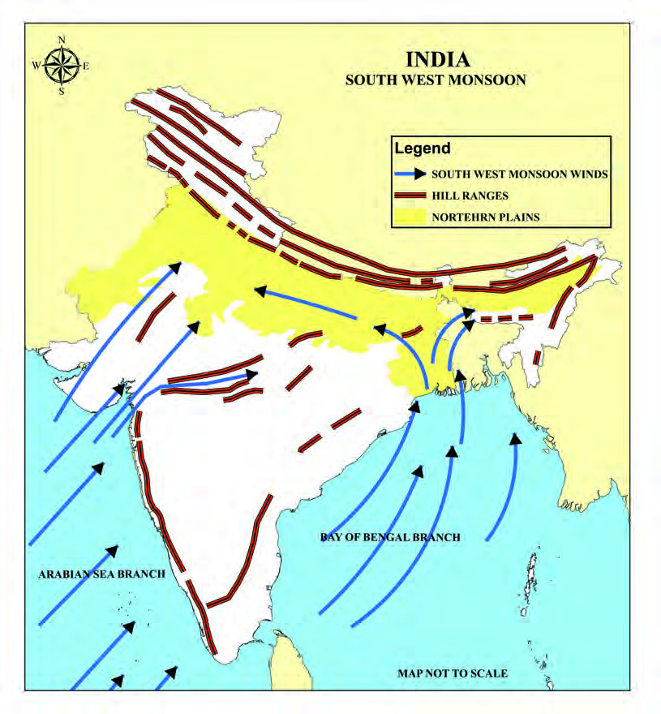


42
Part I
Social Science II
Fig 2.17
The Bay of Bengal branch, entering the land through the
Sundarbans delta region, gets bifurcated into two sub-branches.
One branch moves eastward and enters the Brahmaputra
Plain, causing widespread rains. The other branch, moving
westward along the Ganga Plain, causes rainfall in West
Bengal, Bihar, Uttar Pradesh, Delhi, and proceeds further
westward. Over the Punjab Plain this branch joins the Arabian
branch which is moving parallel to the Aravali Mountains and
then brings rain to the foothills of the Western Himalayas.
The rainfall received in Rajasthan from the southwest monsoon
is very scanty. Why?
Monsoon Winds
SOUTH WEST MONSOON WINDS
MOUNTAIN RANGES
NORTH INDIAN PLAIN
INDIA
SOUTHWEST MONSOON
MAP NOT TO SCALE
Page 43
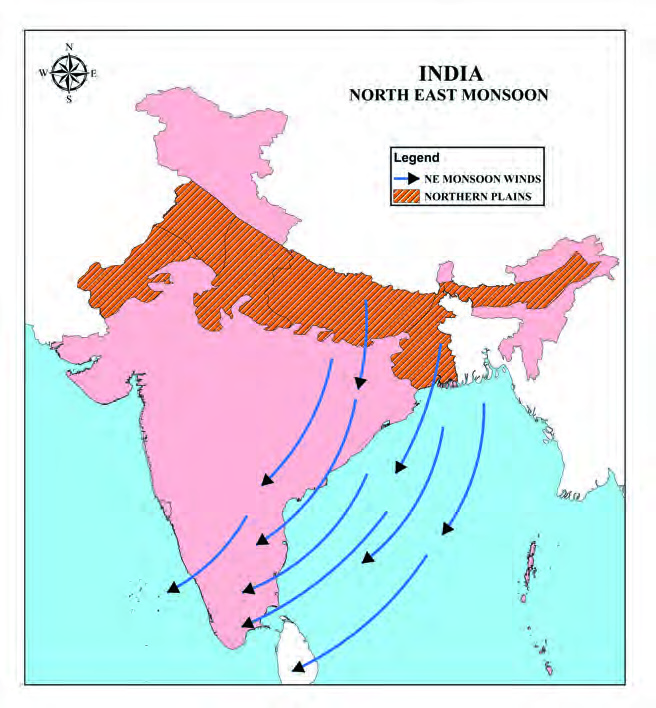


43
In the Expansive Plain
Standard IX
The southwest monsoon season, experienced from June to
September, is the main rainy season in the North Indian Plain.
The Northeast Monsoon Season
The low-pressure area that prevails over the North Indian Plain
starts moving southward in response to the apparent movement
of the sun towards the southern hemisphere. This season is named
the retreating monsoon season. During this period, a high-pressure
area develops over the North Indian Plain and consequently,
the wind starts blowing from here to the Indian Ocean. As these
moisture-less winds blow from the northeast, this season is called
the northeast monsoon season.
The North Indian Plain generally experiences a dry climate during
this season. Owing to the conditions of high temperature and
atmospheric humidity, the weather becomes rather oppressive.
This phenomenon is commonly known as the ‛October heat’.
Fig 2.18
With the help of the provided map (Fig 2.18), identify the movement
of winds that blow in the months of October and November. Locate
them in an outline map of India and include it in ‘My Own Atlas’.
Arabian Sea
Arabian Sea
Bay of Bengal
Bay of Bengal
Monsoon Winds
Monsoon Winds
MAP NOT TO SCALE
NORTH EAST MONSOON WINDS
NORTH INDIAN PLAIN
INDIA
NORTHEAST MONSOON
Page 44
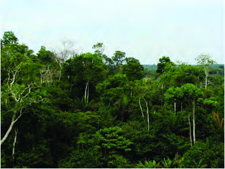

44
Part I
Social Science II
The Natural Vegetation of the North Indian Plain
The natural vegetation found in
the North Indian Plain also shows
diversity. Topography, climate,
and the nature of the soil are some
of the major factors that cause this
diversity in natural vegetation. The
term 'natural vegetation' refers to
a plant community that has been
left undisturbed for a long period,
enabling its individual species
to fully adapt to the respective
climate and soil conditions.
The prominent natural vegetation
generally found in these plains are
given below:
The Tropical Deciduous Forests
The Tropical Thorn Forests
Swamp Forests
The tropical deciduous forests are further divided into two.
They are the dry deciduous forests and the moist deciduous
forests.
Dry deciduous forests are found in those regions where the
annual rainfall ranges between 70 cm and 100 cm. In these
forests, trees shed their leaves for approximately 6 to 8 weeks
in the dry season when sufficient moisture is not available.
The dry deciduous forests are found in the plains of Uttar
Pradesh and Bihar.
The moist deciduous forests are found in areas with moderate
rainfall, ranging from 100 cm to 200 cm per annum. They are
mainly seen along the strip of Shiwalik range including Tarai
and Bhabar and in certain parts of Odisha and West Bengal.
Teak, sal, shisham, mahua, amla and sandalwood are the main
species of the tropical deciduous forests.
Fig 2.19
The Tropical Moist Deciduous Forests
Page 45
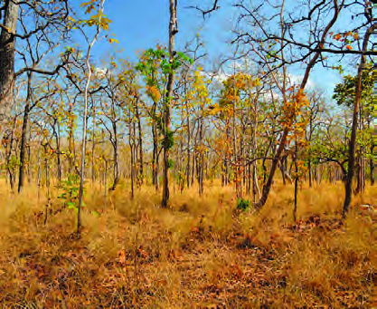

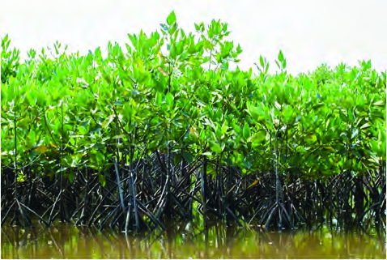

45
In the Expansive Plain
Standard IX
Fig 2.20
The Tropical Dry Deciduous Forests
Fig 2.21
The Tropical Thorn Forests
In the higher rainfall regions of the
North Indian Plain, these forests
exhibit a parkland landscape
characterized by open stretches of
teak and other trees interspersed
with patches of grass. In the dry
season, when the trees shed their
leaves entirely, these forests are
transformed into a vast grassland
with bare trees.
The natural vegetation in the
western
part
of
the
North
Indian Plain is sparse due to
low rainfall and intensive cattle
rearing. Tropical thorn forests
are prevalent in the semi-arid
areas
of
southwest
Punjab,
Haryana, Rajasthan, and Uttar
Pradesh. These forests consist of
various grasses and shrubs, with
important species such as babool,
ber, wild date palm, khair, neem,
khejri and palas. In certain
regions Tussocky grass grows as
undergrowth, reaching up to a
height of 2 metres.
The swamp forests are the natural
vegetation found in the vast saline
expanses of Rajasthan, freshwater
lakes, the freshwater marshes of
the Ganga Plain, the flood plains of
the Brahmaputra, and in the deltaic
region of Sundarbans. The marshy
and expansive deltaic region of
Ganga Plain in West Bengal is
Sundarbans. The natural vegetation
found luxuriously in this region is
mangroves. This region serves as a
natural habitat for the Royal Bengal
Tiger.
Fig 2.22
Swamp Forests
Page 46
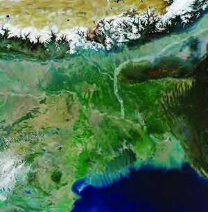
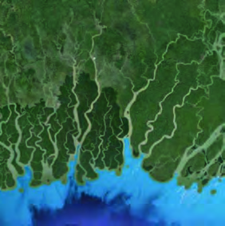


46
Part I
Social Science II
Fig 2.23
Sundarbans Deltaic
Region
Satellite image of
Sundarbans Delta
Sundri Mangrove
The provided map (Fig. 2.24) illustrates the distribution
of natural vegetation in India. Identify and list the major
natural vegetations in the North Indian Plain by analyzing
the map.
The tropical deciduous forests
The tropical thorn forests
The roots of mangrove forests create a natural habitat for
numerous aquatic species, including fishes.
They are the abode of varied species of birds. Sundri, a type of
mangrove, stands out as one of the distinctive features of the
Sundarbans delta.
Locate the Sundarbans delta by referring to an atlas
With the help of information technology, prepare a note with
pictures on the characteristic features of mangrove forests.
Page 47
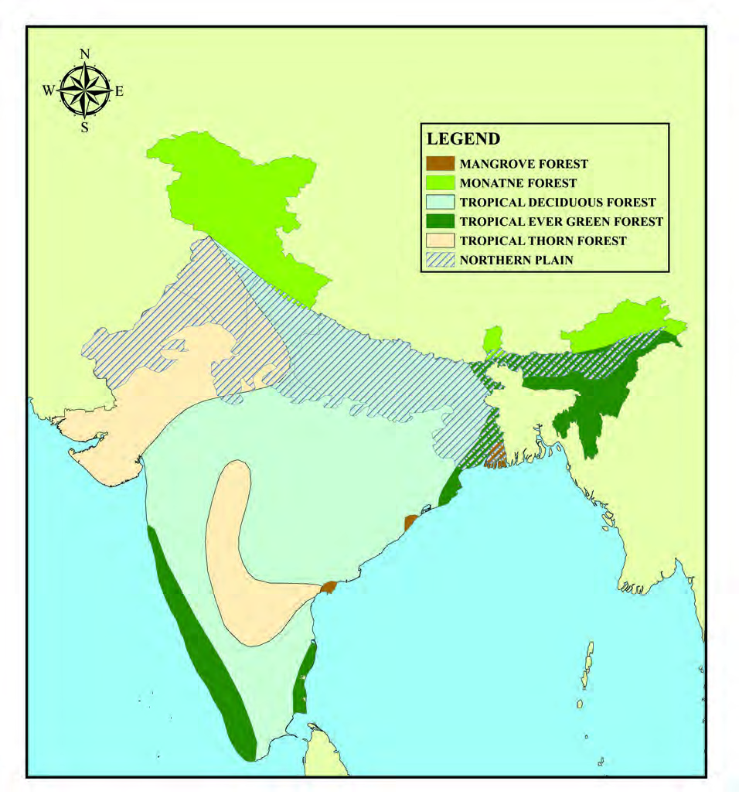

47
In the Expansive Plain
Standard IX
Fig 2.24
INDIA
NATURAL VEGETATION
Arabian Sea
Arabian Sea
Bay of Bengal
Bay of Bengal
MAP NOT TO SCALE
MONTANE FOREST
NORTH INDIAN PLAIN
Page 48


48
Part I
Social Science II
The Major Soil Types of the North Indian Plain
The soil which is widespread in the North Indian Plain is
alluvial soil. The alluvial soils vary in nature from sandy loam
to clay. Alluvial soil is found in limited areas of Rajasthan and
extensively in the plains of Gujarat. There are two different
types of alluvial soils developed in the Ganga Plain: Khadar
and Bhangar. Write the characteristic features of these two
types of soil by referring to the previous topics. The alluvial soil
in the lower and middle Ganga plains and the Brahmaputra
Valley are more loamy and clayey. Alluvial soil is well-suited
for agriculture.
The red soil is found in the southern part of the Middle Ganga
Plain. It is the presence of iron in the soil that gives a red
colour to it. The soil found in the Sundarbans delta region is
saline soil which is characterised by a higher presence of salt.
Saline soil consists of sand and loam. Seawater intrusions into
the deltas cause the formation of saline soils. In certain areas
of the North Indian Plain, where there is intensive cultivation
with excessive irrigation, the fertile alluvial soil has turned
saline. Along the coastal regions of West Bengal, peat soil is
also found.
Arid soil is the soil extensively found in the western parts of
the North Indian Plain, including Rajasthan. It is generally
sandy and saline in structure. As this soil lacks humus and
moisture, irrigation support is required for the plants to grow.
Identify the distribution of different types of soils in the North
Indian Plain by analyzing the provided map (Fig 2.25) and list
them.
Alluvial soil
Red soil
Page 49
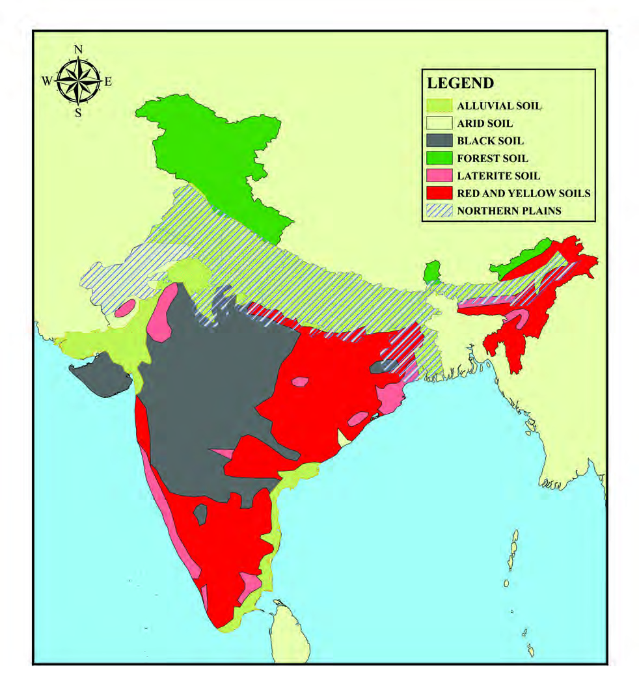

49
In the Expansive Plain
Standard IX
Fig 2.25
INDIA
SOIL
Arabian Sea
Arabian Sea
Bay of Bengal
Bay of Bengal
MAP NOT TO SCALE
NORTH INDIAN PLAIN
Page 50
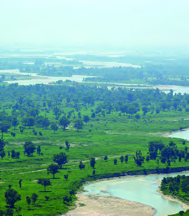


50
Part I
Social Science II
Fig 2.27
A Fertile Part of the North Indian Plain
Fig 2.28
Crop Cultivation in the North Indian Plain
Fig 2.26
An Urban Area in the North Indian Plain
The Human Life
Fertile alluvial soil, flat topography, presence of perennial rivers
and favourable climate are significant characteristic features of
the North Indian Plain. Although this extensive plain accounts
for less than one-fourth of the total area of our country, it is
home to more than half of India's total population. The North
Indian Plain plays a very significant
role in building India’s economic
system based on the agricultural
sector. Wheat, rice, jute, and sugarcane
are widely cultivated here. Extensive
cultivation, supported by irrigation,
has made this plain the granary of
India. The entire plain, except the
Thar Desert, has a well-developed
network of roads and railways. This
infrastructural
development
has
facilitated large-scale industrialisation
and urbanisation of the region.
Kharif, Rabi, and Zaid are the three
Page 51


51
In the Expansive Plain
Standard IX
different cropping seasons in the North Indian Plain during
which varied crops are cultivated. Kharif is associated with
the southwest monsoon season. Rabi begins with the onset of
the cold season. Zaid, a short duration cropping season, starts
after the cultivation of Rabi crops.
We have discussed the major crops cultivated in the North
Indian Plain. The crops mentioned above are not uniformly
cultivated across the entire plain. There are regional diversities
in the distribution of crops and their cropping patterns.
You might have acquired a general awareness about the
location and the extension of the North Indian Plain, as well
as the processes by which this extensive plain was formed.
This physiographic division, characterised by its rich output
and abundance of perennial rivers, plays a significant role
in shaping the cultural diversity of India. Serving as the
backbone of India's agriculture-based economy, this plain
bears a decisive responsibility for our nation's food security.
The facilities such as transportation and communication
provided by the plain have been facilitating the spread and
cultural diffusion of people for decades. The plural and mixed
society that developed through this is the beauty and strength
of our India.
Observe the table given below. In the table, the major crops
cultivated in three different cropping seasons in the North
Indian Plain are listed. Try to understand the duration of
each cropping season and the crops cultivated in each season.
Prepare a note on it by adding additional informations with
the help of information technology.
Cropping Seasons
Major Crops
Kharif (From June to
September)
Tropical Crops- Rice, Cotton, Jute,
Bajra, Tur etc.
Rabi (From October to
March)
Temperate - Subtropical Crops –
Wheat, Gram, Mustard, Barley etc.
Zaid (From April to June)
Vegetables, Fruits, Fodder etc.
Page 52

52
Part I
Social Science II
1.
Project – 'The significant role played by The North
Indian Plain in shaping human life in India'.
2.
Conduct a seminar on the topic ‘Climate and Crops ‘
3.
How is the formation of the North Indian Plains
associated with the formation of the Himalayas?
Elucidate.
4.
Draw the outline map of India and locate the divisions of
the North Indian Plain. Exhibit it in your classroom.
5.
Draw the outline map of India and locate the major
physiographic divisions using different colours to
distinguish them. Also, draw the rivers flowing
through the North Indian Plain and display the map
in your classroom.
Extended Activities